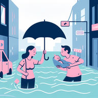

A continuación explicamos las causas más importante sobre las inundaciones, que fueron extraídas del cuadernillo realizado en el Proyecto de Investigación Orientado PIO sobre las inundaciones en La Plata, Berisso y Ensenada. Luego se mostrará un video explicando sobre el tema.
1- Por las fuertes tormentas con lluvias intensas, abundantes y de larga duración.
2- Porque vivimos en una llanura ondulada de mínimas pendientes, atravesadas por varios arroyos.
3- Porque el crecimiento urbano es inadecuado y la planificación urbana y territorial no contempla el riesgo.
4- Porque tanto la población como el Estado, construyen en los márgenes de los arroyos y bañados, obstruyendo el lugar que el agua ocupa naturalmente durante la lluvia.
5- Porque se interrumpe la capacidad de infiltración del suelo natural, por la urbanización no controlada con insuficientes espacios verdes y vegetación. Además, al disminuir la infiltración, aumenta la velocidad y la permanencia del agua en las zonas urbanas.
6- Porque debería ser mayor la presencia y el desarrollo de políticas preventivas y adaptativas del Estado.
7- Porque se han entubado los arroyos y, además, se obturan los cauces de los mismos.
8- Por la ineficiencia de las redes de drenaje urbano y desagües pluviales, ante la falta de actuapzación de sus diseños y de un mantenimiento permanente.
9- Por el manejo incorrecto de residuos sólidos, tanto por parte del Estado como de la ciudadanía, que obstruyen los desagües.
El siguiente video sobre Inundaciones Urbanas en La Plata, Berisso y Ensenada, es un material educativo que explica en forma didáctica los factores que influyen y provocan inundaciones.
Acceso al video:
Pertenece al proyecto “Las inundaciones en La Plata, Berisso y Ensenada: análisis de riesgo, estrategias de intervención. Hacia la construcción de un observatorio ambiental” (2014-2016)
Detalles del video:
Informe Final que se puede consultar en los siguientes enlaces: Las inundaciones en La Plata, Berisso y Ensenada. ) y en Informe Final PIO.